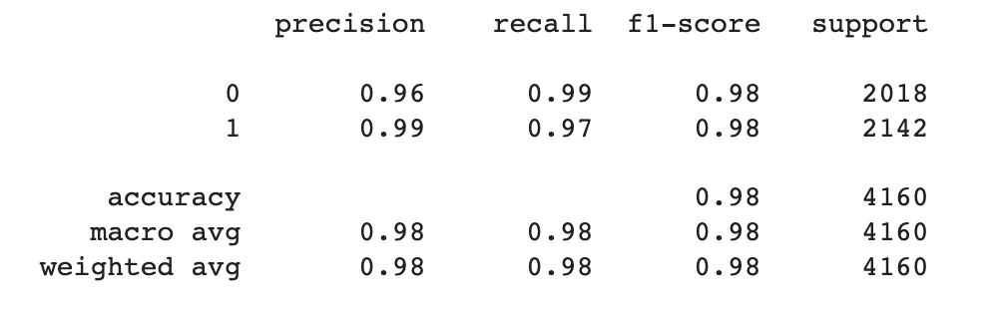

Battling Misinformation: Predictive Modeling for Fake News Detection
Introduction
The proliferation of fake news in the digital era poses significant challenges to information credibility and public trust. This project aims to develop a machine learning model for detecting and predicting fake news with high accuracy. By leveraging advanced natural language processing techniques and various features extracted from news articles and related data, I strive to build a robust model capable of distinguishing between genuine and deceptive information.
Data Description
The dataset consists of news articles and includes the following columns:
id: A unique identifier for each news article.
title: The title of the news article.
author: The author of the news article.
text: The textual content of the news article.
label: A binary label indicating whether the news article is real (0) or fake (1).
Project Steps
Data Collection: Gather a comprehensive dataset containing information about various cars, including features such as make, model, year, mileage, fuel type, transmission, and more.
Data Preprocessing: Perform necessary data preprocessing steps such as handling missing values and handling categorical variables (if any).
Stemming: Apply stemming to reduce words to their root forms. This involves using regular expressions to remove non-alphabetic characters, converting the text to lowercase, splitting the text into individual words, applying stemming using a stemmer like the Porter stemmer, and rejoining the stemmed words.
Applying Stemming to 'content': Apply the stemming function to the 'content' column of the 'news_dataset' DataFrame using the apply() function.
Converting Textual Data to Numerical Data: Use the TfidfVectorizer from scikit-learn to convert the preprocessed 'content' data into numerical features. Fit the vectorizer on the 'X' data and transform 'X' to obtain the numerical representation.
Split the dataset into features (X) and the target variable (y) to prepare for model training.
Model Selection: Choose a suitable classification algorithm for the task, such as Logistic Regression.
Model Training: Initialize a Logistic Regression model and fit it to the transformed numerical data (X) and corresponding labels (y).
Model Evaluation: Evaluate the trained Logistic Regression model's performance using appropriate evaluation metrics such as accuracy, precision, recall, and F1-score.
Classification Report:

Precision: For class 0 (real news), the precision is 0.96, indicating that 96% of the news articles predicted as real are actually real. For class 1 (fake news), the precision is 0.99, meaning that 99% of the news articles predicted as fake are indeed fake. High precision values suggest a low false positive rate, indicating that the model is effective in correctly identifying real and fake news.
Recall: The recall for class 0 is 0.99, indicating that the model correctly identifies 99% of the actual real news articles. The recall for class 1 is 0.97, suggesting that the model correctly identifies 97% of the actual fake news articles. High recall values indicate a low false negative rate, showing that the model can effectively capture most of the real and fake news articles.
F1-score: The F1-score is the harmonic mean of precision and recall and provides a balanced measure of the model's performance. The F1-score for both classes is 0.98, indicating a good balance between precision and recall and an overall strong performance of the model.
Support: The support represents the number of instances for each class. In this case, there are 2018 instances of real news (class 0) and 2142 instances of fake news (class 1).
Accuracy: The overall accuracy of the model is 0.98, suggesting that it correctly predicts 98% of the news articles in the dataset.
Based on the classification report, the model shows high precision, recall, and F1-score values for both real and fake news classes. The accuracy of 98% indicates that the model performs well in classifying news articles as real or fake. However, it is essential to consider other evaluation metrics and conduct further analysis to ensure the model's robustness and generalizability.
Conclusions
In conclusion, the project developed a classification model to identify real and fake news articles. The model achieved high precision, recall, and F1-score values for both classes, indicating its effectiveness in correctly identifying news articles as real or fake. With an accuracy of 98%, the model demonstrates strong overall performance. However, further testing and validation on diverse datasets would be beneficial to assess its generalizability and real-world applicability. Overall, the project provides a reliable solution for distinguishing between real and fake news, contributing to combating misinformation in media.